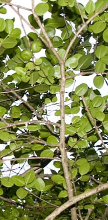
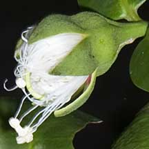
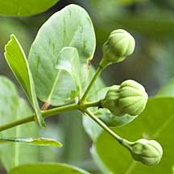

|
|
| plants text index | photo index |
| mangroves | Sonneratia in general |
| Gedabu Sonneratia ovata Family Lythraceae updated Jan 2013 Where seen? This rare mangrove tree can be seen in a few of our accessible mangroves. It can be seen on Pulau Ubin and Chek Jawa, as well as at Sungei Buloh Wetland Reserve, Kranji Nature Trail and is also planted at Pasir Ris Park. According to Ng, in Singapore only a few trees at the hot springs (Kampong Unum) of Pulau Tekong. Trees at Kampong Melayu (Pulau Ubin) and Kampong Mandai Kechil have died or been destroyed with development. It is found on the landward-side of mangroves. But in the past, it was considered widespread in our back mangroves and tidal creeks in Singapore. Features: Small tree up to 5m, occasionally to 20m tall. Pneumatophores conical short (20cm). Leaves fat ovals (5-7cm) usually not narrow at the base, thick and leathery. Flowers large (10cm diameter) with no petals, only many long white stamens forming a powder-puff shape. Stiff cup-shaped calyx with sepals broadly triangular and reddish on the inside. The flowers open at dusk releasing a small of sour milk, and last only for one night. These attract bats and honeybirds. Fruit globular (7.5cm) leathery with calyx lobes that clasp the fruit and do not bend away as in other Sonneratia species. When ripe, the fruit falls and smashes open releasing the seeds. Similar to Perepat (S. alba) except that it tends to be a shorter tree with shiny, dark green leaves and the flowers have no petals. Gedabu is the preferred local food plant for caterpillars of the moths Eucosma, Taurometopa pyrometalla and Zeuzera conferta. Human uses: According to Ng, the fruit is eaten. As a result, the tree is often cultivated in Malay villages. Status and threats: It is listed as 'Critically Endangered' on the Red List of threatened plants of Singapore. |
 Kranji Nature Trail, Jan 11  Leaves glossy, not narrow at the base. Pulau Ubin, Apr 09 |
 Calyx sepals pinkish inside. Mandai, Mar 11 |
 No petals, only fluffy white stamens. Pasir Ris, May 11 |
 Unopened flower. Chek Jawa, Jan 11 |
|
 Young flower buds. Pasir Ris, Mar 11 |
 Ripe fruit falls and splits open releasing seeds. Kranji Nature Trail, Jun 11 |
 Calyx lobes clasp the fruit. Pulau Ubin, Apr 09 |
| Gedabu on Singapore shores |
| Photos of Gedabu for free download from wildsingapore flickr |
| Distribution in Singapore on this wildsingapore flickr map |
|
Links
References
|
|
|